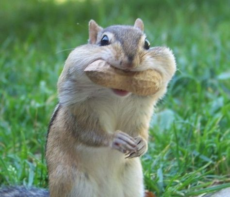
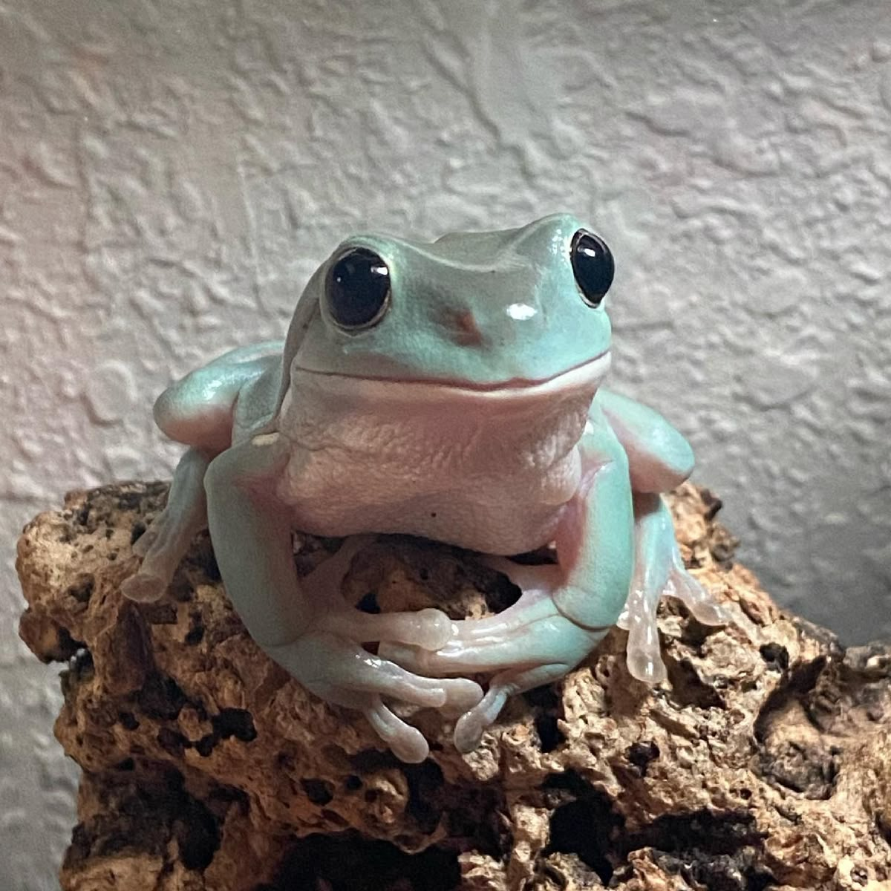

Squirrels are small mammals known for their bushy tails and quick movements. They spend most of their time in trees and are excellent climbers. Squirrels love to eat nuts, seeds, and fruits, and they often hide food for winter. They're commonly seen in parks and forests, especially during the daytime.
Black cats are often surrounded by mystery and superstition, but they're just like any other cats—loving and playful. They have sleek black fur and bright, shining eyes. Black cats are independent and curious, and they make great companions. In some cultures, they are seen as symbols of good luck!

Frogs are amphibians, which means they live both in water and on land. They have smooth, moist skin and are famous for their jumping skills. Frogs start life as tadpoles and go through metamorphosis to become adults. They’re important for the environment because they help control insect populations.